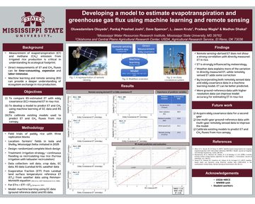
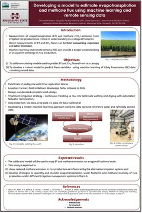
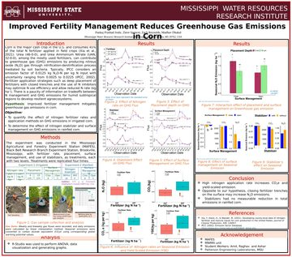
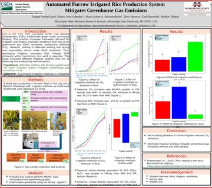
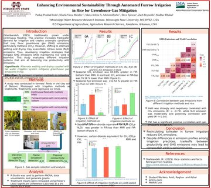

Peer-reviewed & presented
Selected peer-reviewed articles and conference presentations from the lab.
Industrial Crops and Products, 239 (2026). · doi:10.1016/j.indcrop.2025.122466
Agronomy Journal, 118, e70306 (2026). · doi:10.1002/agj2.70306
Agrosystems, Geosciences \& Environment, 8, e70093 (2025). · doi:10.1002/agg2.70093
Horticulturae, 11, 246 (2025). · doi:10.3390/horticulturae11030246
Machine learning on multi-spectral imagery to estimate nutrient yield of mixed-species cover crops
Agricultural \& Environmental Letters, 10, e70009 (2025). · doi:10.1002/ael2.70009
Soil Science Society of America Journal (2025). · doi:10.1002/saj2.70166
Cover crop management strategies affect weeds and profitability of organic no-till soybean
Renewable Agriculture and Food Systems, 39, e3 (2024). · doi:10.1017/S1742170523000522
Improving soil water storage with no-tillage cover cropping in the Mississippi River Alluvial Basin
Soil Science Society of America Journal, 88, 540--556 (2024). · doi:10.1002/saj2.20638
Effect of long-term pasture management on soil hydraulic and thermal properties
Plants, 12, 1491 (2023). · doi:10.3390/plants12071491
Agrosystems, Geosciences \& Environment, 5, e20247 (2022). · doi:10.1002/agg2.20247
Challenges and emerging opportunities for weed management in organic agriculture
In Advances in Agronomy (pp. 125--172). Academic Press, 2022. · doi:10.1016/bs.agron.2023.11.002
Cover crops and landscape positions mediate corn-soybean production
Agrosystems, Geosciences \& Environment, 5, e20249 (2022). · doi:10.1002/agg2.20249
Agronomy Journal, 112, 3605--3618 (2020). · doi:10.1002/agj2.20268
Interseeding alfalfa into native grassland for enhanced yield and water use efficiency
Agronomy Journal, 112, 1931--1942 (2020). · doi:10.1002/agj2.20147
Modeling hairy vetch and cereal rye cover crop decomposition and nitrogen release
Agronomy, 10(5), 701 (2020). · doi:10.3390/agronomy10050701
Row spacing of alfalfa interseeded into native grass pasture influences soil-plant-water relations
Agronomy Journal, 112, 274--287 (2020). · doi:10.1002/agj2.20012
Trade-off between nutritive value improvement and crop water use for an alfalfa-grass system
Crop Science, 60, 1711--1723 (2020). · doi:10.1002/csc2.20159
Crop Science, 59, 2271--2279 (2019). · doi:10.2135/cropsci2019.03.0156
Field calibration of the PR2 capacitance probe in Pullman clay-loam soil of the Southern High Plains
Agrosystems, Geosciences \& Environment, 2, 180043 (2019). · doi:10.2134/age2018.10.0043
Integrated weed management in direct-seeded rice: Dynamics and economics
International Journal of Agriculture, Environment and Food Sciences, 3, 83--92 (2019). · doi:10.31015/jaefs.2019.2.6
Perception and economics of dry direct-seeded rice in the Terai of Nepal
Journal of Agriculture and Environment, 16, 103--111 (2015). · doi:10.3126/aej.v16i0.19843
Click any poster to view it full size.

Oloyede, O.E., P.P. Joshi, D. Spencer, L.J. Krutz, P. Wagle, M. Dhakal. Developing a model to estimate evapotranspiration and greenhouse gas flux using machine learning and remote sensing. Mississippi Academy of Sciences (2026).

Oloyede, O.E., P.P. Joshi, D. Spencer, L.J. Krutz, M. Dhakal. Developing a model to estimate evapotranspiration and methane flux using machine learning and remote sensing data. Graduate Student Research Symposium (2025).

Joshi, P.P., D. Spencer, Z. Reynolds, M. Dhakal. Improved fertility management reduces greenhouse gas emissions in corn. Mississippi Academy of Sciences (2025).

Joshi, P.P., K.V. Mendez, M.A.A. Adviento-Borbe, D. Spencer, Z. Reynolds, M. Dhakal. Automated furrow-irrigated rice production system mitigates greenhouse gas emissions (2025).

Joshi, P.P., K.V. Mendez, M.A.A. Adviento-Borbe, D. Spencer, Z. Reynolds, M. Dhakal. Enhancing environmental sustainability through automated furrow irrigation in rice for greenhouse gas mitigation (2025).
{kind=link}
{kind=link}
{kind=link}
{kind=link}
{kind=link}